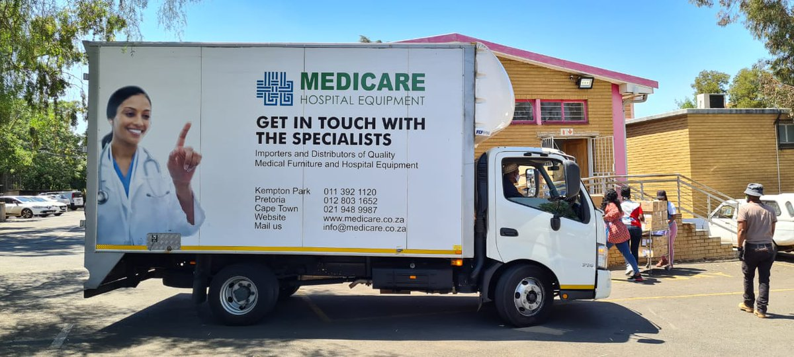

Formed in 1989, the organization was built on medical expertise, excellent client service and efficient national distribution. Today, this desire to constantly improve and grow is an integral part of the Medicare culture and the brand is now firmly established in the South African and African Medical supply chain. With service excellence at our core, we deliver and dispatch from our warehouses in Kempton Park, Cape Town and Pretoria - with Sales teams based in Kwa-Zulu Natal and Dubai. We research the most up to date medical innovation in hospital furniture solutions, medical capital equipment, and emergency rescue devices, to bring our clients the latest and best solution and long term investment in their hospital, ambulance, rescue service or clinic.

Healthcare organizations and practitioners require the latest medical equipment to provide patients with the best care, we’re committed to providing the prices and solutions that medical professionals need to remain at the forefront of their field. To do this, we offer a wide range of medical equipment, including: Laboratory Equipment, Diagnostic Equipment, Imaging Equipment, Ophthalmic Equipment, Dental Equipment and Medical Information Management Systems.
OUR PRODUCT RANGE
IMPORTED EQUIPMENT
- Emergency Resuscitation Trolleys
- All Procedure Specific Trolleys
- Laundry and Linen Trolleys
- Sterile Storage Solutions
- Starsys ICU Bed-End Units
- Drug Cabinets Single and Double Door
- Sonar Machines
- Rescue Devices
- Theatre Beds
- Examination Beds
- X-Ray Viewing Boxes
LOCALLY MANUFACTURED EQUIPMENT
- Stainless Steel Hospital Furniture
- Medical Linen Trolleys
- Medical Mattresses
- Plastic PPE Dispensers
- Plastic Sloping Tops for ICU